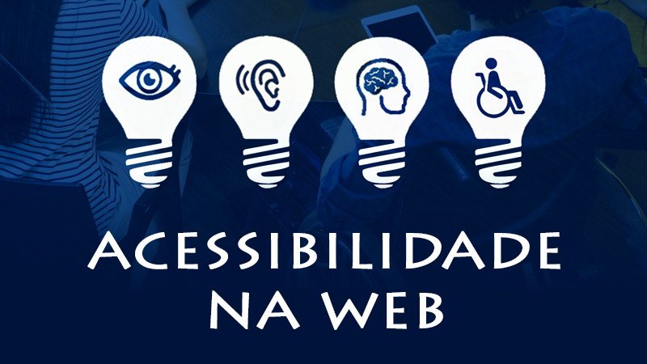

Acessibilidade - UDI
Clique na imagem para ler - O que esperar da inteligência artificial em 2025 | BBC News
Clique na imagem para ler - O que são crimes cibernéticos e como se proteger deles? | Kaspersky

Clique na imagem para ler - Acessibilidade Web – O Que É e Como Construir um Site Acessível? | Hostinger
❮
❯